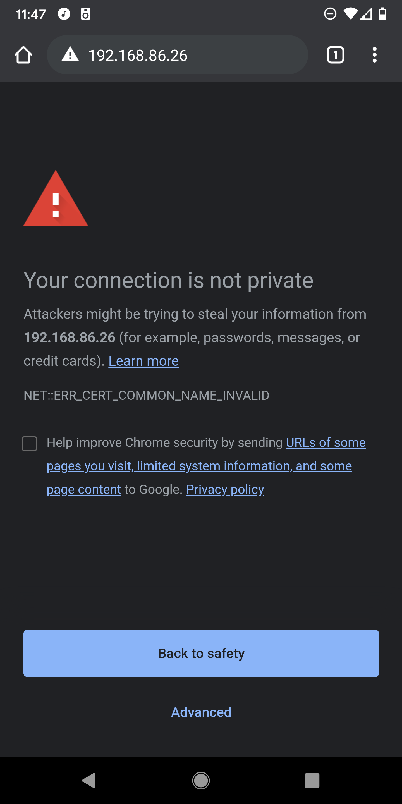
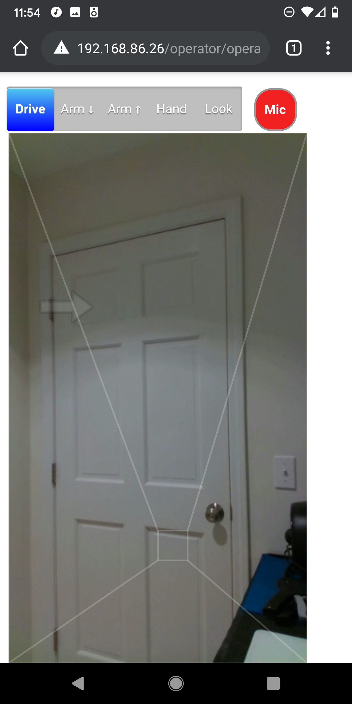
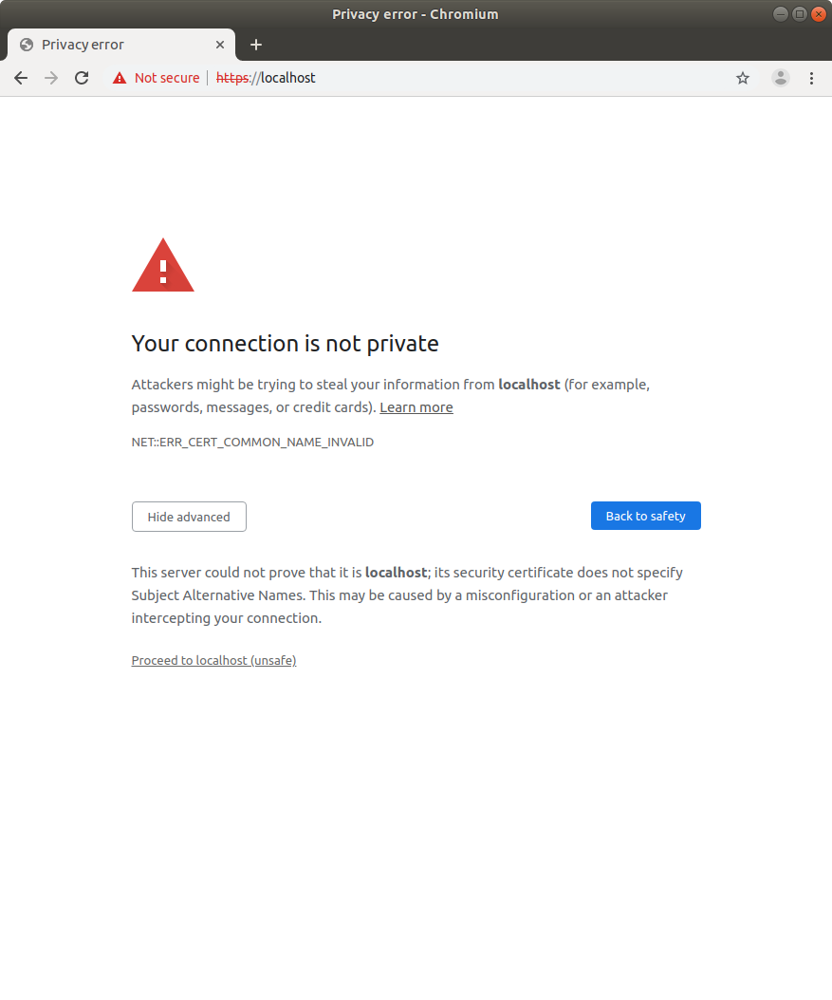

Overview
The code in this repository enables a person to remotely teleoperate S T R E T C H (TM) through a recent Chrome/Chromium web browser on an Android mobile phone, laptop, or desktop.
The stretch_web_interface repository holds prototype code for use with the Stretch RE1, a mobile manipulator from Hello Robot Inc.
WARNING: This is prototype code that has not been well tested. We are making it available in its current state, since we believe it may have value to the community. There are security issues associated with the current code, especially if you use the default credentials. Use this code at your own risk.
Structure
The web interface works via Web Real-Time Communication (WebRTC). Code runs in a browser on the robot, in a browser on the operator's device (e.g., a mobile phone), and on a server. This is analogous to the robot and the operator video conferencing with one another, although they communicate via realtime data in addition to audio and video. Internally, we have used puppeteer to automate the robot's browser so that the robot can automatically launch and login on boot.
Web Server Details
In the example below, the server runs on the robot. In a production environment, you would use an external server, instead of the robot, to handle things like connecting robots and operators behind firewalls. At Hello Robot, we have used a virtual server with Amazon Lightsail. When used on a production server with proper certificates, this system supports HTTPS without scary messages. At Hello Robot, we used Let's Encrypt to help us achieve this.
The web server uses the Express web framework with Pug templates. The server provides a WebRTC signaling service using socket.io. It uses Redis to store sessions.
passport provides authentication for the robot and the operator. mongoose and a MongoDB database store credentials for robots and operators. The stretch_web_interface repository comes with default MongoDB contents found at ./mongodb/ for testing behind a firewall. These default contents come with multiple robot and operator accounts. Make sure not to use these default database contents on a deployed system!
By default, send_recv_av.js uses a free STUN server provided by Google. At Hello Robot, we used our own STUN and TURN server. There is code that we've commented out that we used to achieve this. We ran our own coturn STUN and TURN server on the same Amazon Lightsail virtual server that we used to run the web interface server. At the time, we used Ubuntu 16.04 and installed coturn using apt.
Installation
The stretch_web_interface repository depends on stretch_ros.
Clone the stretch_web_interface repository to ~/catkin_ws/src/ on the robot.
cd ~/catkin_ws/src/
git clone https://github.com/hello-robot/stretch_web_interface.git
Run catkin_make.
cd ~/catkin_ws/
catkin_make
rospack profile
Run the installation script.
cd ~/catkin_ws/src/stretch_web_interface/bash_scripts/
sudo ./web_interface_installation.sh
WARNING: The script uninstalls tornado using pip to avoid a rosbridge websocket immediate disconnection issue. This could break other software on your robot.
Quick Start
When running on a local network behind a firewall, you can use the following insecure method to more conveniently start the system.
Calibrate the Robot
First, make sure the robot is calibrated. For example you can run the following command.
stretch_robot_home.py
Start ROS
Next, in a terminal, run the following command to start ROS. This will start ROS nodes on the robot for the D435i camera, the driver for Stretch RE1, and rosbridge. Rosbridge connects JavaScript running in the robot's browser to ROS using JSON.
roslaunch stretch_web_interface web_interface.launch
Start the Web Server and the Robot's Browser
In another terminal, run the following command to start the web server on the robot, launch the robot's browser, and log the robot into the browser. The convenience script calls start_robot_browser.js, which uses puppeteer to log the robot into its browser.
roscd stretch_web_interface/bash_scripts/
./start_web_server_and_robot_browser.sh
Typically, this script can be exited with Ctrl+C and then restarted without issue.
WARNING: start_robot_browser.js contains the default robot credentials in plain text! This is only appropriate for simple testing on a local network behind a firewall. The username and password are public on the Internet, so this is not secure! Deployment would require new credentials and security measures.
Start the Operator's Browser
You will now login to a browser as the operator and connect to the robot. You can use a Chrome browser on a recent Android mobile phone or a recent Chrome/Chromium browser on a laptop or desktop.
Open the browser goto the robot’s IP address. You can use ifconfig on the robot to determine its IP address.
Select "Advanced" and then click on "Proceed to localhost (unsafe)".



Click on "Login" and use the following username and password.
username:
o1
password
xXTgfdH8
WARNING: This is a default operator account provided for simple testing. Since this username and password are public on the Internet, this is not secure. You should only use this behind a firewall during development and testing. Deployment would require new credentials and security measures.


You should now see a screen like the following. Click on "no robot connected" and select the robot "r1" to connect to it.


You should now see video from the robot on your mobile phone or other device. Click in the designated regions to command the robot to move. You can also click on "Drive", "Arm" down, "Arm" up, "Hand" and "Look" to move different joints on the robot.

Slower Start
The following steps describe how to manually start the web server and the robot's browser on the robot, instead of using the convenience script described above.
Calibrate the Robot
First, make sure the robot is calibrated. For example you can run the following command.
stretch_robot_home.py
Start ROS
Next, in a terminal, run the following command to start the ROS side of things. This will start ROS nodes on the robot for the D435i camera, the driver for Stretch RE1, and rosbridge. Rosbridge connects JavaScript running in the robot's browser to ROS using JSON.
roslaunch stretch_web_interface web_interface.launch
Start the Web Server
In another terminal, run the following command to start the web server on the robot.
roscd stretch_web_interface/bash_scripts/
./start_desktop_dev_env.sh
Start the Robot's Browser
Open a Chromium browser on the robot and go to localhost. Select "Advanced" and then click on "Proceed to localhost (unsafe)".

Click on "Login" and use the following username and password.
username:
r1
password
NQUeUb98
WARNING: This is a default robot account provided for simple testing. Since this username and password are public on the Internet, this is not secure. You should only use this behind a firewall during development and testing. Deployment would require new credentials and security measures.


You should now see video from the robot's camera in the browser window.

Start the Operator's Browser
Please see the instructions above.
Licenses
This software is intended for use with S T R E T C H (TM) RESEARCH EDITION, which is a robot produced and sold by Hello Robot Inc. For further information, including inquiries about dual licensing, please contact Hello Robot Inc.
For license details for this repository, see the LICENSE files, including TUTORIAL_LICENSE.md, WEBRTC_PROJECT_LICENSE.md, and LICENSE.md. Some other sources and licenses are described by comments found within the code.
The Apache 2.0 license applies to all code written by Hello Robot Inc. contained within this repository. We have attempted to note where code was derived from other sources and the governing licenses.